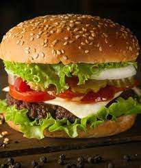

Masala Dosa
Plain rice, Urad dal,,Soda bicarbonate, Fenugreek methi seeds,Ghee or oil,Water for grinding ,Potatoes,OnionsTomatoes, Curry leaves, Green chillies, Garlic slices, Red chilly powder, Mustard seeds, Turmeric powder, Oil, Salt to tastePrepation time:40 minutes, Cook time:10 Minutes
View recipe
French Fries
Potatoes, Salt, black pepper, Oil for deep-fryingPrepation time:20 minutes, Cook time:10 Minutes
View recipe
Matar Paneer
Paneer,Peas,Cashews, black pepper, onions, garlic-ginger paste, mixed vegetables,coriander powder, garam masala,turmeric powder, salt ,chilli powder, green chilliesPrepation time:20 minutes, Cook time:10 Minutes
View recipe
Dal Fry
Ingredients : Dal,Veggies, Green Chilies, Curry Leaves, Asafoetida Powder (hing), Coriander leaves (cilantro), Kasuri Methi (dry fenugreek leaves),Additional Seasonings.Prepation time:30 minutes, Cook time:30 Minutes
View recipe
Biryani
Rice,cumin seeds, onions, garlic-ginger paste, mixed vegetables,coriander powder, garam masala,turmeric powder, salt ,chilli powder, green chillies, lemon juicer,coriander leaves,oil.Prepation time:30 minutes, Cook time:40 Minutes
View recipe
Mix Veg
Ingredients : Veggies, Green Chilies, Curry Leaves, Asafoetida Powder (hing), Coriander leaves (cilantro), Kasuri Methi (dry fenugreek leaves),Additional Seasonings.Prepation time:15 minutes, Cook time:30 Minutes
View recipe

Burger
Ingredients : Veggies, Bun, sauces,allu tikki, oil ,Additional Seasonings.Prepation time:10 minutes, Cook time:10 Minutes
View recipeMomos
Maida,Salt,veggies,Garlic, ,Soya sauce Vinegar, Black pepperPrepation time:30 minutes, Cook time:10 Minutes
View recipeSamosas
Ingredients : Veggies,Cumin Seeds,potatoes,Maida, carom seeds,salt and other spices.Prepation time:20 minutes, Cook time:10 Minutes
View recipe